01 / DEVELOPMENT

Software e integraciones
Desarrollo plataformas para centralizar información y conectar aplicaciones empresariales, bases de datos y servicios mediante flujos confiables.
Odoo ERP n8n Python JavaScript APIs REST Webhooks SQL Server PostgreSQL
02 / INDUSTRY 4.0

Automatización industrial
Implementación y soporte de supervisión de procesos industriales, interfaces de operación e integración de información de equipos de planta.
PLC Siemens Braumat SCADA HMI AVEVA Node-RED IoT industrial
03 / DATA & BI

Datos y visualización
Consultas, integración y presentación de datos para facilitar el seguimiento de procesos y la toma de decisiones.
SQL Server PostgreSQL MySQL Power BI Grafana Tableau Excel
04 / AI & WORKFLOWS

IA aplicada y automatización
Integración de asistentes y agentes de IA en workflows empresariales para consultar información, coordinar tareas y reducir pasos manuales.
OpenAI Agentes IA n8n Flujos automatizados Integración ERP APIs
05 / INFRASTRUCTURE

Redes e infraestructura
Configuración de equipos de red, conectividad segura y soporte de infraestructura corporativa e industrial.
MikroTik Ubiquiti VPN Firewalls DNS Servidores Monitoreo
06 / FRONTEND & UX

Frontend y diseño UX/UI
Diseño y desarrollo de interfaces web responsivas, con atención a la arquitectura de información, los flujos y la accesibilidad.
HTML5 CSS3 JavaScript Figma Responsive UX/UI Accesibilidad